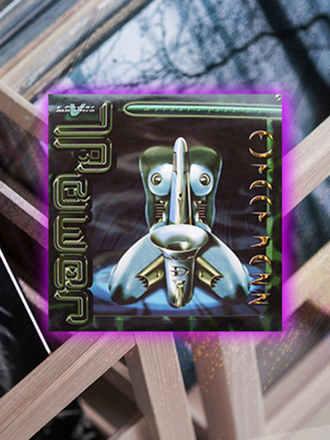

From The Crates: T.Power vs. MK-Ultra "Mutant Jazz"
{kind=link}

The birth of our underground brand Factory 93 not only brought on an adrenaline rush reminiscent of the renegade warehouse era of raving—on which Insomniac was founded—but it also had us thinking back to all the people, places and parties that made this whole operation possible. And with that came a burning desire to crack open our collection and dust off the classic records we couldn’t live without. Through our From the Crate series, we’ll be breaking out both seminal and obscure cuts alike, imparting some knowledge in the process.
Hearing “Mutant Jazz” for the first time was nothing less than a transformative experience. When I heard it on Australian youth radio station Triple J as a 14-year-old—it dropped in 1995, during the peak of the early days of rave—it was one of my first encounters with the kind of inspired futurism that was possible in club music. It was also the early spark for an enduring obsession.
Based broadly in the pioneering sounds of the jungle and drum & bass of that era, the strength of “Mutant Jazz” lay not only in its slick production and cutting-edge use of the technology available at the time. Above all, it was the sophistication of the musical concept it explored that really left an impression.
“Mutant Jazz” goes through its own musical mutation over the course of its seven-minute run. Beginning on the silkiest of smooth hip-hop beats, its assortment of jazzy horn melodies and freeform piano are only subtly embellished by the synthesized ambiance that simmers gently underneath. That’s until several minutes in, when all of this gets turned on its head.
A brash announcement from the Last Poets that “White Man Has Got a God Complex” signals the start of the transformation, as an unpredictable array of jungle beats begin to swirl into the mix, leading “Mutant Jazz” toward its eventual destination of full-blown futurism. And make no mistake: In the mid-‘90s, this is exactly what the record sounded like. Hearing “Mutant Jazz” in all its glory was akin to beginning on familiar territory before watching the door get blown off its hinges as the future opened up in front of you. It was an enigma that would dwell in my subconscious and haunt my dreams for years to come.
“Mutant Jazz” came from the mind of Marc Power, a stalwart of electronic music who had already forged his path in hip-hop and electro, before rave came along and opened up a new universe of musical possibilities. Several years earlier, Power had formed breakbeat hardcore collective Bass Selective, which scored early rave kudos for the piano-heavy anthem “Blow Out Pt. II” and was signed to Sound of the Underground Records (SOUR), a seminal label for the mid-‘90s jungle scene.
“I never really considered myself to be a ‘junglist’ or anything like that, so it allowed me to have a different take.”
When Bass Selective eventually disbanded, Royal continued to release on SOUR under his new T-Power alias, shrugging off the trappings of jungle as he began to make serious waves in the emerging drum & bass scene. The culmination was “Mutant Jazz,” a track he penned alongside former Bass Selective member MK-Ultra.
“I was a little bit older than a lot of the jungle guys making music at the time,” Royal told us recently, taking a break from the mastering business that is his professional focus nowadays. He says “Mutant Jazz” arose partly from a certain distance he had from the UK scene at the time.
“My first loves were hip-hop and electro. Because I was a little older when I got into raving, I wasn’t quite as sucked into it as much as everybody else was. I was able to sit on the perimeters a little bit more. I never really considered myself to be a ‘junglist’ or anything like that, so it allowed me to have a different take.
“It was also very open at that point. There wasn’t any template yet, so there wasn’t the need to fall in line with everyone else. Hip-hop had become very structured and guarded, so moving into the rave scene musically represented a new lease on life for me. There weren’t any boundaries there.”
Without question, Royal’s prior background in hip-hop informed “Mutant Jazz”—thematically, as far as its musical transformation from laidback beats into jungle futurism, as well as through the choice of samples he used to arrange the musical palette. “God Make Me Funky” by the Headhunters, “Sesame Street” by Blowfly, and “Do This My Way” by Kid ‘N Play were among the beats Royal drew upon to arrange his futuristic array of percussion.
“I had to really maximize what I extracted from the units that I had,” he says. “I was what you would call ‘financially limited,’ in terms of the equipment that I could buy at the time, which was incredibly expensive. We hadn’t gone through the democratization that’s happened now with computers and software. So, I was forced to chop breaks up in order to use them, because I just didn’t have enough sampling time. But I was already 10 years ahead of everybody else with regards to doing that, when it still involved just using loops. A lot of people still haven’t figured that out,” he laughs.
These limitations aside, “Mutant Jazz” emerged at a time when the new technology had triggered a creative purple patch for Royal, unleashing what amounted to a musical force of nature.
“I was turning tracks over so fast at that point,” he says. “There was years of frustration bubbling to the surface of not being able to do the things that I wanted to in hip-hop. And as I got better at plying my craft and refined everything, honestly, it didn’t even feel like it came from me; it was like it came from somewhere outside of me. It was decades of growing up, hearing the diverse music my parents used to listen to, and it all just came out in splats of color. It’s hard to remember any rhyme or reason.”
Perhaps it was this exact lack of rhyme or reason that birthed “Mutant Jazz,” a record that captures the “abstract art locked to a dancefloor groove” that defines the very best club music. It’s what drew diehards to club culture, sucked them in, and kept them there. Instead of the tropes and formulas characteristic of club culture since it became the status quo, it was a sophisticated conceptual exploration of where art meets technology. “Mutant Jazz” was something you’d never heard before, the sound of an imagined future that remains as haunting as ever more than 20 years later.